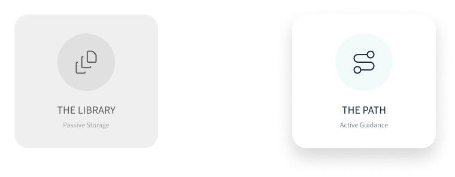
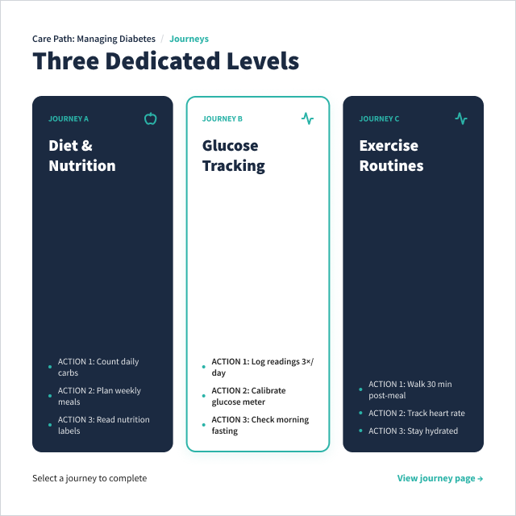
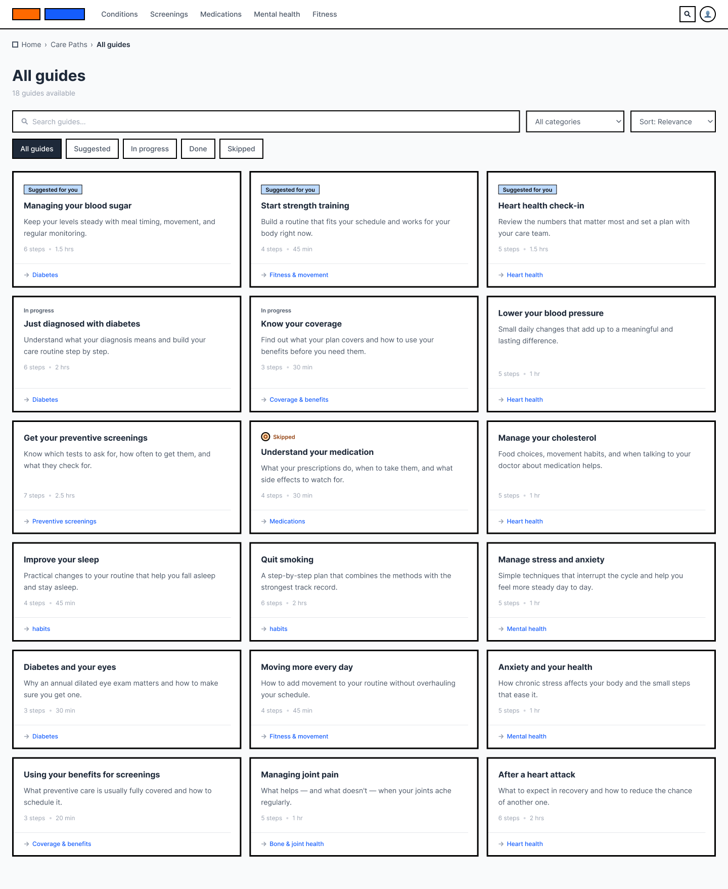
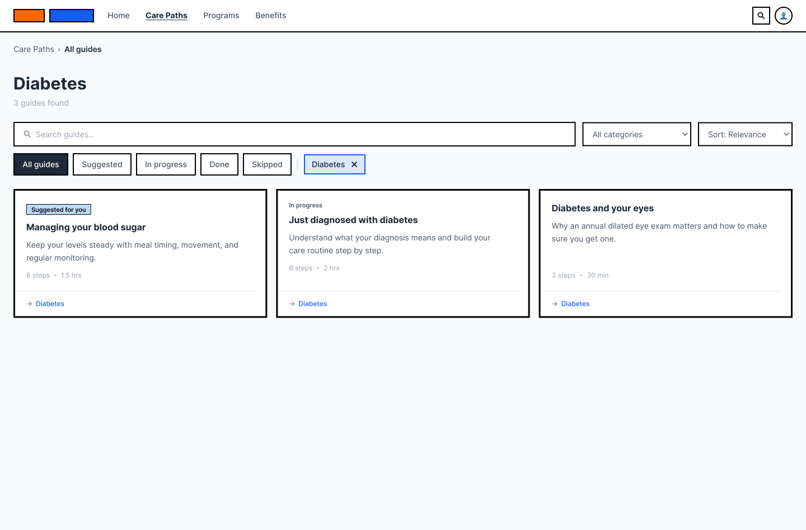
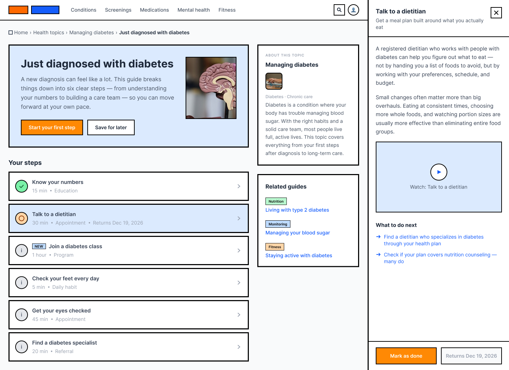
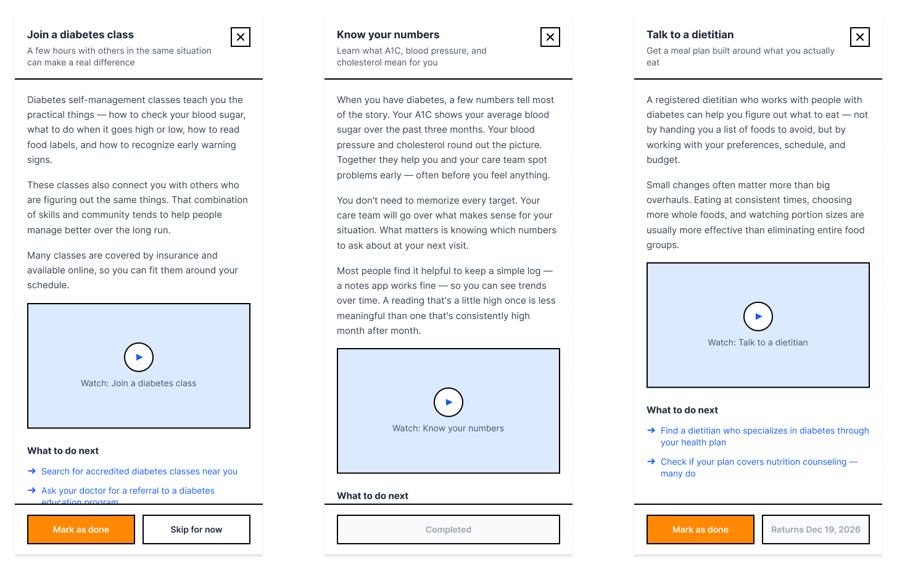

Provider Data Central
Enterprise onboarding platform
Designed cross-system workflows for provider onboarding.
Onboarding cycle time down [XX%]
Curated list of projects
Enterprise onboarding platform
Designed cross-system workflows for provider onboarding.
Onboarding cycle time down [XX%]
AI-assisted provider onboarding workspace
Designed a guided, AI-assisted operating model for a fragmented, multi-system provider onboarding workflow.
Targeting under 15–20 days from a ~34–35 day baseline
AI-assisted fee schedule management platform
Centralized a spreadsheet- and email-driven workflow into a searchable, AI-assisted platform.
Reached UAT across search, create/edit/deactivate, tracking & approvals
Guided care navigation — mobile & web
Turned fragmented health, benefits, and program content into guided, personalized care journeys.
Repeat calls down 16.0%, accepted personalized offers up 10.5%
[CATEGORY OR PRODUCT TYPE]
[ONE SENTENCE, UNDER 110 CHARACTERS.]
[OUTCOME — a number or a clear change]
[PROTOTYPE / SIDE PROJECT / TOOL]
[WHAT YOU BUILT AND WHAT YOU WERE TESTING.]
[WHAT YOU LEARNED]
[PROTOTYPE / SIDE PROJECT / TOOL]
[WHAT YOU BUILT AND WHAT YOU WERE TESTING.]
[WHAT YOU LEARNED]
Ask
Happy to walk through the parts that didn't make the page — the dead ends especially.
Case study
Summary.
[INSERT: what the product does, who uses it, and what you were brought in to change.]
[INSERT: the business situation, plus the constraints that shaped the work. Naming real constraints is what makes a case study credible.]
[INSERT: what you personally did, and what others did. Being specific about shared credit reads as more senior, not less.]
[SHORT QUOTE FROM A REAL PARTICIPANT.]
[WHO THEY ARE, WITHOUT NAMING THEM]
[INSERT: the directions you considered and why you chose one. Include at least one you rejected — that's where the thinking shows.]
[INSERT: how these were measured, and over what period. If you can't share exact figures, use direction and a range.]
[INSERT: the qualitative impact — what the team or org does differently now.]
[INSERT: what you'd do differently, and what you carried into the next project. One honest regret is worth more than three wins.]
Ask
Happy to walk through the parts that didn't make the page — the dead ends especially.
Case study · AI-assisted fee schedule management platform
A centralized, AI-assisted platform for finding, creating, tracking, and auditing fee schedules — replacing a workflow that had lived across spreadsheets, SharePoint, and email. Requesters, approvers, and operations teams now share one system instead of three.
Fee schedule data — the rates and rules that govern how claims get priced — lived across Excel files, SharePoint folders, and email threads. Requesters, leadership approvers, and operations/pricing teams each worked from their own copy of the truth. I helped design the platform that replaced that patchwork: a single hub to search, create, edit, deactivate, approve, track, and audit fee schedules, with an AI assistant layered on top rather than in place of human review.
Search required knowing the exact fee schedule name in advance — there was no way to browse or compare. Stakeholders described it as a scavenger hunt: incomplete discovery regularly led teams to create a new one-off schedule instead of finding the one that already existed. That duplication, plus approvals tracked entirely over email and no consistent template across requests, made the workflow hard to govern as it scaled.
Constraints that shaped the design:
My strongest contribution was translating a deeply operational, spreadsheet-based workflow into a structured product experience that could support both human decision-making and AI-assisted automation. I worked across information architecture, the search and AI panel design, workflow states and validation, request tracking and audit visibility, bulk-action strategy, and a series of development-ready UX decisions — partnering closely with product and engineering throughout rather than handing off a finished design.
Searching could feel like a scavenger hunt — incomplete discovery meant teams sometimes created a new one-off schedule instead of finding the one that already existed.
From a requirements discussion with requester-team stakeholders
I structured the create/edit experience as a single page with persistent context, rather than a multi-step wizard: identity and scope, geographic and regulatory scope, pricing definition, claims system configuration, escalators, retroactivity, approvals, and back-office metadata, with pricing definition as the primary work surface. The spreadsheet had every field visible at once; the platform didn't need to. Progressive disclosure kept advanced and conditional fields out of the way until they were relevant — the recurring design tension was between showing everything that had been migrated and reducing cognitive load, and progressive disclosure was the resolution that kept coming back.
The AI panel sits alongside the form rather than replacing it: it can populate fields from a prompt, but every AI-assumed value is visibly marked and the form stays editable, so a human reviews and can override before anything submits.
The work reached UAT/demo readiness covering search, create, edit, deactivate, request tracking, approvals, email notifications, and associated-entity visibility — addressing every major pain point from discovery: fragmented lookup, manual intake, email-driven approvals, limited tracking, and duplicate-schedule risk. Production metrics weren't available at the time of writing; I'm holding the numbers below until they're validated rather than estimating them.
Four things I'd carry into the next enterprise workflow: don't replicate the spreadsheet one-to-one — find the decision-critical fields and disclose the rest progressively. AI is only trustworthy when its assumptions are visible and reversible, not when it's fastest. Governance — approvals, audit visibility, change history, role-based actions — isn't a back-office add-on; it's what makes people trust the workflow enough to actually leave the spreadsheet behind. And enterprise design systems need to flex for real operational edge cases — modifiers, cap tables, import errors — or the reusable patterns stop being reusable.
Case study · Guided care navigation for mobile & web
I turned a scattered health content library into guided, plain-language next steps — and it measurably reduced support calls.
Care Pathways reframed a sprawling library of health, benefits, and program content as guided journeys inside a member-facing health app and its companion web experience. As Lead Designer I shaped the member experience across mobile and web, aligned it with the workflows care advocates use on the phone, and turned the library into a product model that could scale: care path, then journey, then activity.
People hit major health events — a new diagnosis, a pregnancy, a benefits change, a caregiving crisis — and rarely know what to do next. The programs, benefits, and support services that could help already existed, but they were spread across separate systems and channels, and finding them assumed you already knew what to search for.
The content was not missing. It was unfindable by anyone who could not already name what they needed — which is precisely the person a health event creates. Research made the pattern plain: people think in life events, not product categories, and they stalled on category names they could not interpret.

Representative recreations. Original work under NDA.

Three levels were enough to organize thirty-plus journeys without rebuilding the overwhelming library we were replacing, and shallow enough that a member never had to hold more than one question in mind: what am I dealing with, which situation matches mine, what do I do first.



![The guide detail page for “Just diagnosed with diabetes” on desktop. An introduction panel explains the guide breaks things into six clear steps, with “Start your first step” and “Save for later” buttons. Below, “Your steps” lists six rows — Know your numbers, Talk to a dietitian, Join a diabetes class, Check your feet every day, Get your eyes checked, and Find a diabetes specialist — each with a status icon, a time estimate and a type such as Education, Appointment or Daily habit. A sidebar shows an “About this topic” summary and three related guides.](images/care-pathways/06-guide-detail-step-sheet.png)


Health journeys are not linear, so the system had to be structured and forgiving at once: enough structure to reduce uncertainty, enough flexibility that it responds to someone's situation instead of behaving like a checklist they are failing.

Testing found that filtering worked but the controls competed with other actions and lacked a clear interaction hierarchy, and that the mobile popover pattern was difficult to use with a screen reader. The rework gave every control a visible, persistent label, made selected states unambiguous through checkboxes and chips, and replaced ambiguous dismissal with dedicated header actions and one persistent apply button.

![A three-column diagram. The left column, Member, lists digital self-service entry points and member actions such as follow CTA, skip activity and mark complete. The centre column, Shared Care Path, shows the care path, journey and activity structure with status values not started, in progress, completed and skipped, shared content types, and recommendations. The right column, Care Advocate, lists an assisted workflow — open the member's care path, see its status, view the same content, continue the conversation — and advocate actions including completing an activity on behalf of the member. Arrows between the columns are labelled digital and assisted continuity.](images/care-pathways/10-advocate-continuity.png)
The hardest problem was designing for nonlinear journeys while still giving people a sense of progress. Too much structure and the experience becomes a checklist someone is failing; too little and it collapses back into the library we were replacing. What resolved it was treating skipping as a first-class state rather than an error — the system keeps its shape, and the member keeps their pace.
What I'd do differently: set up a formal experiment framework earlier, and define success measures at the activity, journey, and pathway levels before launch rather than after. We had directional program metrics but thinner data than I wanted on how individual journeys performed — which is exactly the data that would have sharpened the next round of design decisions.
Case study · AI-assisted provider onboarding workspace
Turning a fragmented, manual, multi-system workflow into a guided operating model — targeting a 34–35 day process for sub-20-day execution.
OnboardIQ is a portfolio-safe name for a provider onboarding redesign that aimed to turn a fragmented, manual, multi-system workflow into a guided, AI-assisted operating model.
The core idea: one intake record, role-specific work queues, AI-prepared evidence, transparent handoffs, and human decision gates. This aligned with the strategy direction of shifting from sequential handoffs to parallel execution across contracting, credentialing, and data loading, coordinated by an orchestration layer.
Framed another way: one provider request, three role lenses, one source of truth — AI doing the assembly, humans making the decisions.
I led UX for the onboarding experience, owning wireframes, work queue interaction patterns, AI summary placement, detail-page structure, stakeholder facilitation, and prototype iteration.
The existing onboarding workflow was slow, manual, and split across intake, contracting, credentialing, and downstream data-loading activities. Discovery repeatedly surfaced the same contributors to cycle time and rework: manual verification, duplicate attachments, email-template follow-ups, manual network and fee schedule loading, contract review, credentialing review, and fallout handling.
End-to-end turnaround time sat at roughly 34–35 days, against a target direction of under 15–20 days near-term and 10 days or fewer longer-term.
The problem was not "make a better UI." It was a service-design challenge: how to help internal teams coordinate work across multiple handoffs while preserving auditability, human judgment, and operational reporting — and while absorbing state-specific exceptions, special onboarding paths, duplicate requests, missing documentation, and provider-facing status ambiguity.
Research was primarily artifact review, journey mapping, SME walkthroughs, internal workshops, stakeholder validation sessions, and prototype reviews.
Early workshops focused on empathy mapping, pain points, and model-agnostic intake — standardizing the initial flow regardless of provider model type, and using shared journey materials to identify opportunities. Later workshops reviewed current-state processes for solo and group onboarding, contracting, credentialing, data loading, state-specific workflows, and automation opportunities.
The strategy was to simplify the user's mental model while preserving operational complexity in the system. The future-state direction articulated five principles: model-agnostic intake, upstream validation first, exception-only human work, one tracker with one source of truth, and upstream prevention of downstream fallout.
Translated into three experience principles:
An AI-assisted onboarding workspace built around:
Notably, the solution avoided over-claiming full automation. AI prepared evidence, classified exceptions, generated summaries, and supported next actions — while human review was preserved at every key decision point.
Validation ran through recurring stakeholder walkthroughs, internal alignment sessions, and design reviews rather than formal usability testing. Stakeholders reviewed work queue columns, filters, assignment, duplicate criteria, missing-information flows, status naming, and detail-page action placement.
The most useful learning was methodological. Business users gave limited feedback when asked broad questions about wireframes — in one reviewed session, only about 5% of utterances represented actual end-user feedback. I treated that as a research-method problem rather than a user problem, and moved the team toward scenario-based prompts: asking participants what they would do when a request was missing tax documentation, or when it looked like a duplicate. Feedback moved from silence to decision-quality input.
Post-launch measurement was not available at the time of writing. The following are targets and planning baselines:
| Metric | Baseline / current | Target or expected | Evidence strength |
|---|---|---|---|
| End-to-end turnaround time | ~34–35 days | <15–20 days near-term; ≤10 days future-state | Medium — target, not realized outcome |
| Overall current process time | ~30–33 days | — | Medium — workshop estimate |
| Contracting time | 10–12 days | — | Medium — workshop estimate |
| Credentialing time | ~7 days | — | Medium — workshop estimate |
| Provider contract signing expectation | — | 7 days from provider after contract sent | Medium — operational expectation |
| Counter-signature volume opportunity | Manual process | ~2,000 contracts/month | Medium — planning input |
| Staff throughput expectation | — | 50 requests/week; 200/month | Medium — single source |
| Feedback quality signal | — | ~5% actual user feedback in one reviewed session | Low/Medium — one session |
This project required shifting from screen production to systems thinking: mapping operational complexity, negotiating scope, building alignment, and making AI understandable and accountable. It also required design leadership through prioritization — when pricing and onboarding competed for attention, the team agreed onboarding should hold full focus until new pricing requirements emerged.
The hardest part was not designing the queue. It was helping stakeholders imagine a future workflow while protecting the operational nuances that made their current process work.